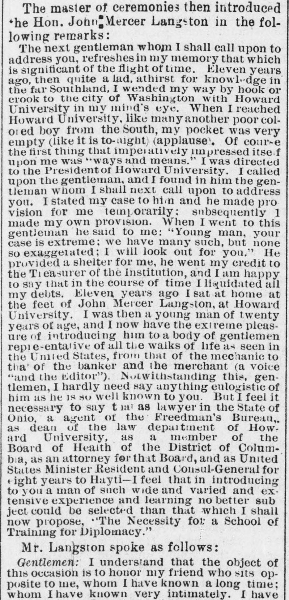
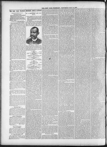

Honoring Consul AstwoodHomenaje al Cónsul Astwood
The New York Freeman. New York [N.Y.], May 14, 1887. Page 2. Published by T. Thomas Fortune. A weekly newspaper, 1884–1887.The New York Freeman. New York [N.Y.], 14 de mayo de 1887. Página 2. Publicado por T. Thomas Fortune. Periódico semanal, 1884–1887. View the originalVer el original


See the full pageVer la página completa- By a Reception and Banquet.Mediante una recepción y un banquete.
- A Notable Gathering in New York City to Mark an Appreciation of His Services as a Representative of American Interests at San Domingo—A Republican Official Whose Record Secured His Reappointment by a Democratic Administration.Una notable reunión en la ciudad de Nueva York para expresar el aprecio por sus servicios como representante de los intereses americanos en Santo Domingo: un funcionario republicano cuya hoja de servicios le aseguró la renovación del nombramiento por una administración demócrata.
The New York Freeman prints the full report of the reception and banquet tendered at the Stevens House in New York on May 6, 1887, to H. C. C. Astwood, the United States Consul at San Domingo. Astwood speaks on Dominican-American commerce, printing the trade figures for 1881–1885 and the American enterprises under way in the Republic; the Dominican consul, Charles Julian, toasts in Spanish; T. McCants Stewart answers for President Cleveland; John Mercer Langston argues that Astwood's character makes the case for a school of diplomacy; and Gen. Horatio C. King urges the Democratic administration to keep the Republican consul in office. The report runs off the page in the middle of King's speech.The New York Freeman publica el reportaje completo de la recepción y el banquete ofrecidos en la Stevens House de Nueva York, el 6 de mayo de 1887, a H. C. C. Astwood, cónsul de los Estados Unidos en Santo Domingo. Astwood habla del comercio dominico-americano, con las cifras comerciales de 1881 a 1885 y las empresas americanas en curso en la República; el cónsul dominicano, Charles Julian, brinda en español; T. McCants Stewart responde por el presidente Cleveland; John Mercer Langston sostiene que el carácter de Astwood justifica una escuela de diplomacia; y el general Horatio C. King insta a la administración demócrata a mantener en su puesto al cónsul republicano. El reportaje sale de la página a mitad del discurso de King.
FULL TEXT:TEXTO COMPLETO:
The handsomely furnished ladies' parlor of the Stevens House, No. 27 Broadway, New York City, on Friday evening, May 6, was draped with national and Dominican flags, from the folds of which hung in a frame of plush a genial looking picture of Hon. H. C. C. Astwood, United States Consul at San Domingo, to whom the Rev. Wm. B. Derrick, D D., and Editor T. Thos. Fortune had tendered a complimentary reception and banquet. Covers were laid for twenty and an extra table for the press representatives was provided in a side room. The menu was as follows:El salón de damas, elegantemente amueblado, de la Stevens House, n.º 27 de Broadway, ciudad de Nueva York, la noche del viernes 6 de mayo, estaba adornado con banderas nacionales y dominicanas, de cuyos pliegues colgaba, en un marco de felpa, un retrato de semblante afable del Hon. H. C. C. Astwood, cónsul de los Estados Unidos en Santo Domingo, a quien el Rev. Wm. B. Derrick, D. D., y el director T. Thos. Fortune habían ofrecido una recepción y un banquete de cortesía. Se pusieron cubiertos para veinte personas y se dispuso una mesa adicional para los representantes de la prensa en una sala contigua. El menú fue el siguiente:
MENU.MENÚ.
Little Neck clams — SauterneAlmejas Little Neck — Sauterne
PotagesSopas
Green turtle — Consomme a la royale — SherryTortuga verde — Consomé a la royale — Jerez
Varies — Hors d'oeuvre — VariesVariados — Hors d'oeuvre — Variados
Brissotins au supremeBrissotins au suprême
PoissonPescado
Broiled brook trout a la meuniere — ClaretTrucha de arroyo a la brasa a la meunière — Clarete
Stuffed olives — Parisian potatoesAceitunas rellenas — Papas a la parisina
ReleveRelevé
Tenderloin of beef a la financiereSolomillo de res a la financière
Tomates farciesTomates rellenos
EntreeEntrée
Supreme of spring chicken a la ChambordSuprema de pollo de primavera a la Chambord
Potatoes en surprise — French green peasPapas en surprise — Guisantes verdes franceses
NiersteinerNiersteiner
SorbetSorbete
Punch a la romainePonche a la romana
GameCaza
English snipe sur canape — MaconAgachadiza inglesa sur canapé — Mâcon
Asparagus, hollandaiseEspárragos, salsa holandesa
RoastAsado
Spring lamb, mint sauce — SaladCordero de primavera, salsa de menta — Ensalada
String beans — ChampagneHabichuelas verdes — Champán
ColdFrío
Foie-gras aux truffes — Aspic of lobsterFoie-gras aux truffes — Aspic de langosta
Entremets sucresEntremeses dulces
Cream diplomate — Pudding a la MontpensierCrema diplomate — Pudín a la Montpensier
Omelette soufflee a la rouennaiseTortilla soufflé a la ruanesa
Fruits and dessert — CafeFrutas y postre — Café
Liqueurs and cigars.Licores y cigarros.
About this table, laden with the rarest viands and fragrant with the perfume of a profusion of variegated floral designs and boutonnieres, sat men noted in every walk of life, and the sparkling speeches that fell from the lips of renowned orators carried the hotel back to the days of its glory, in the Dutch epoch of Manhattan Island. At the head of the table sat Editor Fortune; on his right Mr. Astwood, followed by Gen. Horatio C. King, President of the San Domingo Railway. On Mr. Fortune's left was Hon. Chas. Julian, Consul of the Dominican Republic at New York; next came Hon. John Mercer Langston, ex-Minister to Hayti and President of the Virginia Normal and Collegiate Institute. At the other end of the table was Dr. Derrick, on whose left sat Hon. E. D. Bassett, Consul-General of the Haytian Government at New York; Prof. H. M. Joseph of Antigua, W. I.; Lawyer T. McCants Stewart, Prof. Chas. L. Reason, Dr. B. W. Arnett, member of the Ohio Legislature, Prof. C. A. Dorsey, H. L. Bean, R. Henri Herbert of Trenton, N. J.; Jerome B. Peterson of THE FREEMAN, James Grant of Wanamaker & Co., Philadelphia; Rev. Wm. H. Dickerson, pastor of Siloam Presbyterian Church, Brooklyn; Charles Julian, Jr., and E. G. Morrell of the Dominican Consulate, and N. McKay. When ample justice had been done the gastronomic feast, toasts were proposed and responded to, Mr. Fortune acting as master of ceremonies.Alrededor de esta mesa, cargada con las viandas más exquisitas y fragante con el perfume de una profusión de variados diseños florales y boutonnieres, se sentaban hombres notables en todos los órdenes de la vida, y los brillantes discursos que cayeron de los labios de renombrados oradores transportaron al hotel a los días de su gloria, en la época holandesa de la isla de Manhattan. A la cabecera de la mesa se sentaba el director Fortune; a su derecha, el Sr. Astwood, seguido del general Horatio C. King, presidente del Ferrocarril de Santo Domingo. A la izquierda del Sr. Fortune estaba el Hon. Chas. Julian, cónsul de la República Dominicana en Nueva York; seguía el Hon. John Mercer Langston, exministro en Haití y presidente del Instituto Normal y Universitario de Virginia. Al otro extremo de la mesa estaba el Dr. Derrick, a cuya izquierda se sentaban el Hon. E. D. Bassett, cónsul general del Gobierno haitiano en Nueva York; el Prof. H. M. Joseph, de Antigua, Indias Occidentales; el abogado T. McCants Stewart, el Prof. Chas. L. Reason, el Dr. B. W. Arnett, miembro de la Legislatura de Ohio, el Prof. C. A. Dorsey, H. L. Bean, R. Henri Herbert, de Trenton, Nueva Jersey; Jerome B. Peterson, de THE FREEMAN, James Grant, de Wanamaker & Co., Filadelfia; el Rev. Wm. H. Dickerson, pastor de la Iglesia Presbiteriana Siloam, de Brooklyn; Charles Julian, Jr., y E. G. Morrell, del Consulado dominicano, y N. McKay. Cuando se hubo hecho amplia justicia al festín gastronómico, se propusieron brindis y se respondió a ellos, actuando el Sr. Fortune como maestro de ceremonias.
In response to the toast of "Our Guest," Mr. Astwood delivered the following speech on the subject of commercial relations between San Domingo and the United States:En respuesta al brindis de «Nuestro Huésped», el Sr. Astwood pronunció el siguiente discurso sobre el tema de las relaciones comerciales entre Santo Domingo y los Estados Unidos:
Mr. Derrick and Mr. Fortune:Sr. Derrick y Sr. Fortune:
My friends, I cannot find words to express to you my thanks for this very high compliment paid to me, in my official capacity, by you gentlemen, and the honor you do me in bringing me on an occasion like this in relations with the honorable gentlemen that surround this board, and inviting me to speak upon a subject so important as the commercial relations between San Domingo and the United States. Time would fail me to handle this important subject in all its details and in which the interests of the two countries are so much involved, but I will as briefly as possible present a few facts which, I hope, will go far toward explaining away a great many misrepresentations and misstatements in connection with the commerce of the two countries.Amigos míos, no encuentro palabras para expresarles mi gratitud por este altísimo cumplido que me rinden, en mi carácter oficial, ustedes, caballeros, y el honor que me hacen al ponerme en una ocasión como esta en relación con los honorables caballeros que rodean esta mesa, y al invitarme a hablar sobre un tema tan importante como las relaciones comerciales entre Santo Domingo y los Estados Unidos. El tiempo me faltaría para tratar este importante tema en todos sus detalles y en el que tanto están involucrados los intereses de los dos países, pero presentaré tan brevemente como me sea posible algunos hechos que, espero, contribuirán en gran medida a disipar muchas tergiversaciones y falsedades en relación con el comercio de los dos países.
San Domingo, which in my judgment is the very finest island in the Antilles or New World, is little known to the majority of our people, although it is the first island upon which Columbus, the great discoverer, founded a city in the New World; and, strange to say, it is the only Republic on this continent in the group of islands outside of Hayti which maintains its sovereignty free from all encumbrances of foreign or European dictation. Although when first discovered this beautiful island contained an inhabitance of several millions of people, yet to-day the Dominican Republic with its vast area of territory, with its fertile and unexplored forests of valuable woods and minerals, has a population of less than four hundred thousand. Its commercial relations with the United States are little known, as I have already stated, to a majority of our people. San Domingo is often considered in the columns of our journals as a revolutionary and barbarous country. This is an error; they have their periodical political troubles, and sometimes they resort to the sword or to war to settle these difficulties; but these revolutions are less destructive to life and property than our labor strikes. History cannot show a single instance where the Dominicans have ever molested foreign property, or have ever maltreated the person of a foreigner during their political upheavals. The name of San Domingo is often mixed up with that of other countries. This is unfortunate as far as the people of that Republic are concerned. A more friendly, docile and magnanimous people cannot be found anywhere in the world; with a government as liberal as that of the United States, the foreigner having every facility and right given by any civilized government.Santo Domingo, que a mi juicio es la isla más hermosa de las Antillas o del Nuevo Mundo, es poco conocida por la mayoría de nuestro pueblo, aunque es la primera isla en la que Colón, el gran descubridor, fundó una ciudad en el Nuevo Mundo; y, cosa extraña, es la única República de este continente en el grupo de islas fuera de Haití que mantiene su soberanía libre de toda imposición de dictados extranjeros o europeos. Aunque cuando fue descubierta esta hermosa isla contenía una población de varios millones de personas, hoy la República Dominicana, con su vasta extensión de territorio, con sus fértiles e inexplorados bosques de valiosas maderas y minerales, tiene una población de menos de cuatrocientos mil habitantes. Sus relaciones comerciales con los Estados Unidos son poco conocidas, como ya he dicho, por la mayoría de nuestro pueblo. Santo Domingo es considerada a menudo en las columnas de nuestros periódicos como un país revolucionario y bárbaro. Esto es un error; tienen sus periódicos trastornos políticos, y a veces recurren a la espada o a la guerra para zanjar estas dificultades; pero estas revoluciones son menos destructivas para la vida y la propiedad que nuestras huelgas obreras. La historia no puede mostrar un solo caso en que los dominicanos hayan molestado jamás la propiedad extranjera, o hayan maltratado la persona de un extranjero durante sus convulsiones políticas. El nombre de Santo Domingo se confunde a menudo con el de otros países. Esto es lamentable para el pueblo de esa República. No puede encontrarse en ninguna parte del mundo un pueblo más amistoso, dócil y magnánimo; con un gobierno tan liberal como el de los Estados Unidos, teniendo el extranjero toda facilidad y derecho que concede cualquier gobierno civilizado.
The principal products of San Domingo are the valuable woods of its native forests, such as mahogany, lignum vitæ, fustic, satin wood, and too many others to mention; tobacco, sugar, beeswax, honey, rum, hides, coffee, cocoa, etc., etc., and the largest number of tropical fruits imaginable. Its soil is fertile in the extreme, capable of the most extensive production, and it only requires capital, railroads and immigration to make it the very finest and wealthiest island in the West Indies. Its government is liberal in the extreme, and I was pleased to meet in the city to-day one of its representative men in the person of General Luperon, who has left no stone unturned to encourage and protect the interests of the foreigner in the Dominican Republic; and no abler executive can be found than General Heureaux, the present President of that country, who is especially friendly and interested in the commercial relations with the United States.Los principales productos de Santo Domingo son las valiosas maderas de sus bosques nativos, como la caoba, el guayacán, el palo amarillo, la madera satinada, y tantas otras que no cabe mencionar; tabaco, azúcar, cera de abejas, miel, ron, cueros, café, cacao, etc., etc., y la mayor cantidad imaginable de frutas tropicales. Su suelo es fértil en extremo, capaz de la más extensa producción, y solo requiere capital, ferrocarriles e inmigración para convertirse en la isla más hermosa y rica de las Indias Occidentales. Su gobierno es liberal en extremo, y me complació encontrar hoy en la ciudad a uno de sus hombres representativos en la persona del general Luperón, que no ha dejado piedra sin remover para fomentar y proteger los intereses del extranjero en la República Dominicana; y no puede encontrarse un ejecutivo más capaz que el general Heureaux, actual Presidente de ese país, que es especialmente amistoso e interesado en las relaciones comerciales con los Estados Unidos.
In dealing with this question it would be necessary to give a few figures to see how, or to what extent, the trade has increased. Ten years ago importations from the United States were in a measure small, most of the trade then being with the little Danish Island of St. Thomas, from which all the provisions and merchandise were brought, the principal markets being Germany, Spain, England and Italy. I think by actual statistics the business between San Domingo and the United States at that period was less than half a million of dollars for the whole Republic; the value exported to the United States being really nothing but a few cargos of wood, the entire tobacco crop being shipped to Europe. Since that time trade has increased immensely, and in my District alone, we find the following figures:Al tratar esta cuestión sería necesario dar algunas cifras para ver cómo, o en qué medida, ha aumentado el comercio. Hace diez años las importaciones desde los Estados Unidos eran en cierto modo pequeñas, pues la mayor parte del comercio se hacía entonces con la pequeña isla danesa de Santo Tomás, desde donde se traían todas las provisiones y mercancías, siendo los principales mercados Alemania, España, Inglaterra e Italia. Creo que, según las estadísticas reales, el negocio entre Santo Domingo y los Estados Unidos en ese período era de menos de medio millón de dólares para toda la República; el valor exportado a los Estados Unidos no era en realidad más que unos pocos cargamentos de madera, y toda la cosecha de tabaco se embarcaba para Europa. Desde entonces el comercio ha aumentado inmensamente, y solo en mi Distrito encontramos las siguientes cifras:
In the year 1884—Merchandise, $86,802.28; machinery, $48,857.73; provisions, $253,883.45; hardware, $24,424.70; sundries, $30,000; liquors, $4,278.65; lumber, $31,818.53; lime, $6,948.27; bricks, $4,060; specie, $69,980; making a total $561,064.11 imported from the United States. Imports from foreign countries: In the year 1884—Merchandise, $213,611.91; provisions, $117,816.10; liquors, $33,847.44; lumber, $3,740.25; machinery, $22,312.63; hardware, $37,726.80; zinc and copper, $28,896.71; bricks, $2,214.70; sardines, $54,553.35; total, $521,692.89, leaving, you see, a considerable balance in favor of the United States. Since then, these figures have increased quite 50 per cent., which will be seen by the next official report.En el año 1884: mercancías, $86,802.28; maquinaria, $48,857.73; provisiones, $253,883.45; ferretería, $24,424.70; artículos varios, $30,000; licores, $4,278.65; madera, $31,818.53; cal, $6,948.27; ladrillos, $4,060; numerario, $69,980; lo que hace un total de $561,064.11 importados desde los Estados Unidos. Importaciones desde países extranjeros: en el año 1884: mercancías, $213,611.91; provisiones, $117,816.10; licores, $33,847.44; madera, $3,740.25; maquinaria, $22,312.63; ferretería, $37,726.80; zinc y cobre, $28,896.71; ladrillos, $2,214.70; sardinas, $54,553.35; total, $521,692.89, lo que deja, como ven, un considerable saldo a favor de los Estados Unidos. Desde entonces, estas cifras han aumentado casi un 50 por ciento, lo que se verá en el próximo informe oficial.
The imports and exports varied as follows during the years 1881, 1882, 1883 and 1885: 1881—imports, $683,700.45; exports, $808,349.54. 1882—imports, $936,154.42; exports, $1,084,379.64. 1883—imports, $1,235,887.96; exports, $1,422,665.83. 1885—imports, $1,118,759.01; exports, over a million and a half of dollars.Las importaciones y exportaciones variaron como sigue durante los años 1881, 1882, 1883 y 1885: 1881: importaciones, $683,700.45; exportaciones, $808,349.54. 1882: importaciones, $936,154.42; exportaciones, $1,084,379.64. 1883: importaciones, $1,235,887.96; exportaciones, $1,422,665.83. 1885: importaciones, $1,118,759.01; exportaciones, más de un millón y medio de dólares.
The statistics for the whole island will show about the same proportion as that of the Consular District of San Domingo, and it can be seen at once that closer commercial relations between San Domingo and the United States are desirable for our people. The Reciprocal Treaty proposed by that Government and celebrated by it and Secretary Frelinghuysen about three years ago, if ratified, would build up an immense commerce between San Domingo and the United States and would be the stepping stone to a monopoly of all the business between the West Indies and South American Republics. And, besides, its fine harbors, notably that of Samana Bay, would be a splendid coaling and commercial station for our naval, as well as commercial fleet, and I am certain if a treaty of reciprocity was celebrated between these two countries, such an acquisition would be feasible on the part of the United States. This would be the gateway or the key of the world's commerce with the Isthmus of Panama.Las estadísticas de toda la isla mostrarán aproximadamente la misma proporción que las del Distrito Consular de Santo Domingo, y puede verse de inmediato que unas relaciones comerciales más estrechas entre Santo Domingo y los Estados Unidos son deseables para nuestro pueblo. El Tratado Recíproco propuesto por ese Gobierno y celebrado por él y el secretario Frelinghuysen hace unos tres años, si se ratificara, levantaría un inmenso comercio entre Santo Domingo y los Estados Unidos y sería el peldaño hacia un monopolio de todo el negocio entre las Indias Occidentales y las repúblicas sudamericanas. Y, además, sus hermosos puertos, notablemente el de la Bahía de Samaná, serían una espléndida estación carbonera y comercial para nuestra flota naval, así como para la comercial, y estoy seguro de que si se celebrara un tratado de reciprocidad entre estos dos países, tal adquisición sería factible por parte de los Estados Unidos. Esta sería la puerta o la llave del comercio del mundo con el Istmo de Panamá.
The many American enterprises now undertaken by our people, if carried into effect in good faith, cannot fail to build up a large business within a very few years. The San Domingo Central Railroad, whose President and Vice-President sit at this board, starting in at the point of Barahona, crossing the Great Salt Mountains twenty-one miles from the terminus, passing through the District of Neiba with its immense mahogany forests and other valuable woods, thence through the fertile region known as the St. John's Valley, crossing the mountain range over to Sabanata, going through the fertile district of Guyabin with its immense pine, log-wood and other forests, would be an immense outlet to the commodities of this country, to say nothing of the hundreds of thousands of acres of land that would be thrown open to emigrants from this and other countries for the production of tropical fruits, cotton, etc., in great abundance. The fruit industry to be established at Samana Bay by the Bay State Fruit Company of Boston, of which Willis M. Snow is president, and the other Northern ports of the Island, will be a great factor in connection with its commerce, to say nothing of the immense tract of land contracted for by a Boston syndicate upon the Romana, Cumayasa and Chabon Rivers, in the District of Seybo, represented by Hiram Newcomb and Edgar R. Champlin, where a Winter resort will be established upon the most picturesque and fertile region known in the New World. Negotiations are also being effected with capitalists of the United States for bettering the financial condition of the country which if successfully carried out will at once establish the commercial destiny of San Domingo, and in the course of a very few years the business will be increased from a few millions to scores of millions.Las muchas empresas americanas emprendidas ahora por nuestro pueblo, si se llevan a efecto de buena fe, no pueden dejar de levantar un gran negocio en muy pocos años. El Ferrocarril Central de Santo Domingo, cuyo presidente y vicepresidente se sientan en esta mesa, partiendo del punto de Barahona, cruzando las Grandes Montañas de Sal a veintiuna millas de la terminal, pasando por el Distrito de Neiba con sus inmensos bosques de caoba y otras maderas valiosas, luego por la fértil región conocida como el Valle de San Juan, cruzando la cordillera hasta Sabaneta, atravesando el fértil distrito de Guayubín con sus inmensos bosques de pinos, palo de tinte y otros, sería una inmensa salida para los productos de este país, por no decir nada de los cientos de miles de acres de tierra que se abrirían a los emigrantes de este y otros países para la producción de frutas tropicales, algodón, etc., en gran abundancia. La industria frutera que se establecerá en la Bahía de Samaná por la Bay State Fruit Company de Boston, de la que Willis M. Snow es presidente, y los demás puertos del norte de la Isla, será un gran factor en relación con su comercio, por no decir nada de la inmensa extensión de tierra contratada por un sindicato de Boston sobre los ríos Romana, Cumayasa y Chabón, en el Distrito del Seibo, representado por Hiram Newcomb y Edgar R. Champlin, donde se establecerá un balneario de invierno en la región más pintoresca y fértil conocida en el Nuevo Mundo. También se están efectuando negociaciones con capitalistas de los Estados Unidos para mejorar la condición financiera del país, las que, si se llevan a cabo con éxito, establecerán de una vez el destino comercial de Santo Domingo, y en el curso de muy pocos años el negocio aumentará de unos pocos millones a decenas de millones.
I trust, gentlemen, that this meeting here to-night will be the means of the beginning of an investigation which will go far in determining and developing all of these great enterprises now contemplated by our people, and in which a great many here present are positively interested. If I have done anything, gentlemen, to merit the high honor conferred upon me by you in tendering me this compliment to-night, it has been by the humble efforts which I have put forth in behalf of my country and people, in developing that happy condition of affairs, both commercial and otherwise, existing to-day between the people of the United States and San Domingo. Too much cannot be said in behalf of the efforts put forth by President Heureux of the Dominican Republic and its Minister of Foreign Nations, the Hon. M. M. Guetieu, and the Minister of Public Improvements, in holding out inducements to our capitalists to assist in developing the rich resources of the Dominican Republic, and I trust that the erroneous reports which have been circulated daily by designing individuals, who are not anxious to see capitalists of the United States invest in this important country, but are doing all in their power to discredit the country, to maintain a strict and meagre monopoly to the detriment of the commercial relations not only of San Domingo but of the United States—I hope that these schemers will be unmasked and that our people will be led to see the true condition of affairs as has been represented from time to time in our reports to the Department of State at Washington. You will be astonished when I tell you, gentlemen, that foreign capitalists to-day are controlling the finances of San Domingo and forcing that government to pay an interest of from three per cent. to five per cent. a month, and they have been willing for the last eight or ten years to carry on this unmerciful and shylock speculation, and yet when the attention of foreign capitalists is called to the fact that they might invest safely and securely at a reasonable rate of interest, these people are always ready to raise the hue and cry that to invest in San Domingo is worse than throwing your money into the sea; but still they are contented to remain themselves and feast upon the fatted calf. I have done all in my power to destroy these base influences, and I feel that the time is fast approaching when our people, upon a close investigation will see the underlying causes for these discrediting reports, and will at once come to the rescue of this struggling and meritorious country. Hoping, gentlemen, that what I have said will be sufficient to cause a deeper interest to be taken by our commercial men in the development of the commercial relations between San Domingo and the United States, and that our eminent divine, Dr. Derrick, and our fearless and independent editor, Mr. Fortune, will be participants in gathering of the golden harvest to be reaped from our commercial, religious, educational and industrial progress which might possibly be precipitated by this important private gathering so happily brought about by their laudable efforts.Confío, caballeros, en que esta reunión de esta noche será el medio de dar comienzo a una investigación que contribuirá mucho a determinar y desarrollar todas estas grandes empresas que ahora contempla nuestro pueblo, y en las que muchos de los aquí presentes están positivamente interesados. Si he hecho algo, caballeros, para merecer el alto honor que me han conferido al rendirme este cumplido esta noche, ha sido por los humildes esfuerzos que he realizado en favor de mi país y de mi pueblo, al desarrollar ese feliz estado de cosas, tanto comercial como de otro tipo, que hoy existe entre el pueblo de los Estados Unidos y Santo Domingo. Nunca se dirá demasiado en favor de los esfuerzos realizados por el presidente Heureux de la República Dominicana y su ministro de Relaciones Exteriores, el Hon. M. M. Guetieu, y el ministro de Obras Públicas, al ofrecer incentivos a nuestros capitalistas para que ayuden a desarrollar los ricos recursos de la República Dominicana, y confío en que los informes erróneos que a diario han circulado individuos intrigantes, que no desean ver a los capitalistas de los Estados Unidos invertir en este importante país, sino que hacen todo lo que está en su poder para desacreditar al país, para mantener un estricto y mezquino monopolio en detrimento de las relaciones comerciales no solo de Santo Domingo sino de los Estados Unidos; espero que estos intrigantes sean desenmascarados y que nuestro pueblo llegue a ver la verdadera condición de las cosas tal como se ha representado de vez en cuando en nuestros informes al Departamento de Estado en Washington. Se asombrarán cuando les diga, caballeros, que capitalistas extranjeros controlan hoy las finanzas de Santo Domingo y obligan a ese gobierno a pagar un interés de entre un tres y un cinco por ciento mensual, y han estado dispuestos durante los últimos ocho o diez años a continuar esta inmisericorde y usurera especulación, y sin embargo, cuando se llama la atención de los capitalistas extranjeros sobre el hecho de que podrían invertir segura y firmemente a una tasa razonable de interés, esta gente está siempre lista para levantar el grito de que invertir en Santo Domingo es peor que arrojar el dinero al mar; pero aun así se contentan con permanecer ellos mismos y festejarse con el ternero cebado. He hecho todo lo que está en mi poder para destruir estas bajas influencias, y siento que se acerca rápidamente el momento en que nuestro pueblo, tras una estrecha investigación, verá las causas subyacentes de estos informes desacreditadores, y acudirá de inmediato al rescate de este país esforzado y meritorio. Con la esperanza, caballeros, de que lo que he dicho baste para que nuestros hombres de comercio se interesen más profundamente en el desarrollo de las relaciones comerciales entre Santo Domingo y los Estados Unidos, y de que nuestro eminente divino, el Dr. Derrick, y nuestro intrépido e independiente director, el Sr. Fortune, sean partícipes en la cosecha de la recolección dorada que ha de recogerse de nuestro progreso comercial, religioso, educacional e industrial que posiblemente podría precipitarse por esta importante reunión privada tan felizmente lograda por sus loables esfuerzos.
When the health of the President of the Dominican Republic was proposed, Consul Chas. Julian arose and said: "I beg to express myself in Spanish and to toast to 'Do your best and leave the rest.'" He then spoke in Spanish, and half the gentlemen being versed in that tongue, expressed their approval by constant applause.Cuando se propuso la salud del Presidente de la República Dominicana, el cónsul Chas. Julian se levantó y dijo: «Pido expresarme en español y brindar por: "Haz lo mejor que puedas y deja lo demás"». Luego habló en español, y la mitad de los caballeros, versados en esa lengua, expresaron su aprobación con constantes aplausos.
The toast "The President of the United States" was then proposed and Lawyer T. McCants Stewart on rising to respond to this sentiment, said:El brindis «El Presidente de los Estados Unidos» fue propuesto entonces, y el abogado T. McCants Stewart, al levantarse para responder a este sentimiento, dijo:
Gentlemen, I am too full for utterance (laughter); and yet I am not alone, for we have all freely indulged in a flow of spirits (laughter). Of course, I mean animal spirits not liquid spirits (laughter); for following the example of my esteemed friend, Editor Fortune, I have confined myself to water on this occasion (laughter). We certainly have had a rich feast. It has been enjoyable from the Little Neck clams clear down to the "toast" (laughter); and if the "toast" which we are now having should prove as excellent as the other dishes, I shall adopt the language of a good old hymn and say:Caballeros, estoy demasiado lleno para hablar (risas); y sin embargo no estoy solo, pues todos hemos participado libremente en un flujo de espíritus (risas). Por supuesto, me refiero a los espíritus animales, no a los espíritus líquidos (risas); pues siguiendo el ejemplo de mi estimado amigo, el director Fortune, me he limitado al agua en esta ocasión (risas). Ciertamente hemos tenido un rico festín. Ha sido disfrutable desde las almejas Little Neck hasta el «brindis» (risas); y si el «brindis» que ahora estamos haciendo resultara tan excelente como los demás platos, adoptaré el lenguaje de un buen himno antiguo y diré:
"My willing soul would stay In such a place as this."«Mi alma gustosa se quedaría en un lugar como este».
(Great laughter).(Grandes risas).
Speaking as I do in the presence of Republicans, Democrats, Mugwumps and Negrowumps, I have to guard well my language and have an eye to the proprieties of the occasion; but gentlemen, it seems to me that in drinking the health of the President of the United States as we have done, we have risen above the narrow limits of party and passed into the broad field of patriotism (applause). The Presidency of the United States is a great office, made so by the vastness of the country and the strength of the people. Think of what a vast area of territory stretches between ocean and ocean, and between where the lakes with their beauty lie on the North to where the Gulf rolls dark heaving on the South. Think of the variety of climate, the fertility of soil, the richness of resources; and think of the millions of citizens who are strong in their intelligence, stronger in their virtue, and stronger still in the aspirations which they feel in the battle of life, and then unite with me in declaring that the first citizen among such citizens and in such a country is a king among kings (applause).Hablando como hablo en presencia de republicanos, demócratas, Mugwumps y Negrowumps, tengo que guardar bien mi lenguaje y atender a las conveniencias de la ocasión; pero caballeros, me parece que al beber a la salud del Presidente de los Estados Unidos como hemos hecho, nos hemos elevado por encima de los estrechos límites del partido y hemos pasado al amplio campo del patriotismo (aplausos). La Presidencia de los Estados Unidos es un gran cargo, hecho tal por la vastedad del país y la fuerza del pueblo. Piensen en qué vasta extensión de territorio se extiende entre océano y océano, y entre donde los lagos con su belleza yacen al norte hasta donde el Golfo se agita oscuro y ondulante al sur. Piensen en la variedad de clima, la fertilidad del suelo, la riqueza de los recursos; y piensen en los millones de ciudadanos que son fuertes en su inteligencia, más fuertes en su virtud, y más fuertes aún en las aspiraciones que sienten en la batalla de la vida, y luego únanse a mí para declarar que el primer ciudadano entre tales ciudadanos y en tal país es un rey entre reyes (aplausos).
The glory and strength of our political system whose centre is the President lies in the fact that the humblest boy may aspire to be President of the United States (applause). The bootblack, the paper-seller—anybody; and they see both their hope and inspiration in the fact that Lincoln was a rail splitter; that Grant was a tanner; that Garfield was a driver of mules on the canals of Ohio; and that Cleveland is of the people and from the people, having been a poor boy, the son of an humble minister of the Gospel.La gloria y la fuerza de nuestro sistema político, cuyo centro es el Presidente, reside en el hecho de que el muchacho más humilde puede aspirar a ser Presidente de los Estados Unidos (aplausos). El limpiabotas, el vendedor de periódicos, cualquiera; y ven tanto su esperanza como su inspiración en el hecho de que Lincoln fue un partidor de rieles; que Grant fue un curtidor; que Garfield fue un conductor de mulas en los canales de Ohio; y que Cleveland es del pueblo y procede del pueblo, habiendo sido un muchacho pobre, hijo de un humilde ministro del Evangelio.
No matter, gentlemen, what our nationality, our citizenship, our politics—be we West Indians, or Republicans, or Democrats, or Mugwumps, let us at this moment be Americans one and all, and let us rejoice that the President of the United States is an honest conscientious patriot, who is administering the government with wisdom and with justice (applause). He has kept the United States at peace with all the world without sacrificing one iota of our national manhood and self-respect; and if he continues the good work we shall remain at peace with the rest of mankind, using the language of President Taylor, I think, who in an annual message unwittingly said, "We are at peace with all the world, and we hope to maintain amicable relations with the rest of mankind" (laughter)—reminding us of the deacon who prayed—"Let the power of the Gospel be felt everywhere; let it extend to earth's remotest bounds; let this precious power be felt where the foot of man or beast never trod" (great laughter).No importa, caballeros, cuál sea nuestra nacionalidad, nuestra ciudadanía, nuestra política —seamos antillanos, o republicanos, o demócratas, o Mugwumps—, seamos en este momento americanos todos y cada uno, y alegrémonos de que el Presidente de los Estados Unidos es un patriota honesto y concienzudo, que está administrando el gobierno con sabiduría y con justicia (aplausos). Ha mantenido a los Estados Unidos en paz con todo el mundo sin sacrificar ni una iota de nuestra hombría nacional y nuestro respeto propio; y si continúa la buena obra permaneceremos en paz con el resto de la humanidad, usando el lenguaje del presidente Taylor, creo, quien en un mensaje anual dijo sin querer: «Estamos en paz con todo el mundo, y esperamos mantener relaciones amistosas con el resto de la humanidad» (risas), recordándonos al diácono que oraba: «Que el poder del Evangelio se sienta en todas partes; que se extienda hasta los confines más remotos de la tierra; que este precioso poder se sienta donde jamás pisó el pie del hombre ni de la bestia» (grandes risas).
President Cleveland has strengthened commercial and business confidence by a sound financial policy; he has purified the public service; he has secured general and hearty admiration because of his habits of industry and earnest toil in the public service, and because all along the line of his administration there is honesty and cleanness (applause). But if we differ here, there is one act of President Cleveland that we all approve. It is the act entitled, "An act making a noble and gifted woman the first lady of the land." My reference to the President of the United States would be materially defective if I should fail to say, "All hail" to the President's wife, whose influence emanating from a noble soul is felt throughout the United States, and is destined to leap the limits of our Republic, and like that of the good Queen Victoria to be felt throughout the earth (applause).El presidente Cleveland ha fortalecido la confianza comercial y empresarial mediante una sana política financiera; ha purificado el servicio público; se ha ganado la admiración general y cordial por sus hábitos de industria y su laborioso empeño en el servicio público, y porque en toda la línea de su administración hay honestidad y limpieza (aplausos). Pero si diferimos en esto, hay un acto del presidente Cleveland que todos aprobamos. Es el acto titulado: «Un acto que hace de una noble y dotada mujer la primera dama de la nación». Mi referencia al Presidente de los Estados Unidos sería materialmente defectuosa si no dijera: «Salve» a la esposa del Presidente, cuya influencia, emanada de un alma noble, se siente en todos los Estados Unidos, y está destinada a saltar los límites de nuestra República, y como la de la buena reina Victoria, a sentirse en toda la tierra (aplausos).
Permit me, Mr. President, before sitting, to express my appreciation of the honor which you have done me in inviting me to join these distinguished gentlemen in meeting on this festive occasion the eminent Consul from the United States to San Domingo, our friend, Mr. Astwood. By force of character, by strength of intellect, by conscientious devotion to duty, our honored guest has won the respect and esteem of his countrymen and of the Dominicans, and he has forced even his opponents to feel and to express the highest admiration for him (applause). As I listened to his able and instructive speech, and heard of the vast resources and growing prosperity of the island of San Domingo and Hayti, my mind reverted to the illustrious soldier and statesman, Toussaint L'Ouverture (great applause), who declared as he was borne an unwilling captive to the dungeons of the treacherous Napoleon, "I have planted the tree of liberty and independence so deep in my native soil that all France cannot root it up" (continued applause). That utterance was prophetic; for during all these generations there have stood strong and immovable the Republic of Hayti and the Republic of San Domingo, combining their light with that of our native country and illuminating the politically dark places of the earth, strengthening democracy in France, and weakening aristocracy and monarchism in Great Britain and Germany, and hastening the day when governments of the people, for the people and by the people shall prevail throughout the earth (great applause). Sustaining, encouraging and inspiring these West Indian Republics will be for all time to come the aim and effort of our own great country through its Chief Magistrate; and we shall have the power as well as the disposition to do this work; for in the generations to come, here upon this soil, dedicated to Liberty by the tears and blood of the patriots of the Revolution, and saved forever to Union and Freedom by the blood of the heroes of the Rebellion—here upon this sacred soil there will flourish such a republic as hath not entered even into the imagination of men—a republic greater than Greece and stronger than Rome, mighty in war, glorious in peace and enshrined in the affections of the people (continued applause).Permítame, Sr. Presidente, antes de sentarme, expresar mi aprecio por el honor que me ha hecho al invitarme a unirme a estos distinguidos caballeros para encontrar en esta festiva ocasión al eminente cónsul de los Estados Unidos en Santo Domingo, nuestro amigo, el Sr. Astwood. Por la fuerza de su carácter, por la fuerza de su intelecto, por su concienzuda devoción al deber, nuestro honrado huésped se ha ganado el respeto y la estima de sus compatriotas y de los dominicanos, y ha obligado incluso a sus oponentes a sentir y expresar la más alta admiración por él (aplausos). Al escuchar su capaz e instructivo discurso, y oír de los vastos recursos y la creciente prosperidad de la isla de Santo Domingo y Haití, mi mente se volvió hacia el ilustre soldado y estadista Toussaint L'Ouverture (grandes aplausos), quien declaró, mientras era llevado cautivo contra su voluntad a las mazmorras del traicionero Napoleón: «He plantado el árbol de la libertad y la independencia tan hondo en mi suelo nativo que toda Francia no podrá arrancarlo de raíz» (aplausos continuados). Esa expresión fue profética; pues durante todas estas generaciones han permanecido fuertes e inamovibles la República de Haití y la República de Santo Domingo, combinando su luz con la de nuestro país nativo e iluminando los lugares políticamente oscuros de la tierra, fortaleciendo la democracia en Francia, y debilitando la aristocracia y el monarquismo en la Gran Bretaña y Alemania, y apresurando el día en que los gobiernos del pueblo, por el pueblo y para el pueblo prevalezcan en toda la tierra (grandes aplausos). Sostener, alentar e inspirar a estas repúblicas antillanas será por todo el tiempo venidero el objetivo y el esfuerzo de nuestro propio gran país por medio de su Magistrado Supremo; y tendremos el poder tanto como la disposición para hacer esta obra; pues en las generaciones venideras, aquí sobre este suelo, dedicado a la Libertad por las lágrimas y la sangre de los patriotas de la Revolución, y salvado para siempre para la Unión y la Libertad por la sangre de los héroes de la Rebelión —aquí sobre este suelo sagrado florecerá una república tal como no ha entrado ni siquiera en la imaginación de los hombres— una república más grande que Grecia y más fuerte que Roma, poderosa en la guerra, gloriosa en la paz y consagrada en los afectos del pueblo (aplausos continuados).
The master of ceremonies then introduced the Hon. John Mercer Langston in the following remarks:El maestro de ceremonias presentó entonces al Hon. John Mercer Langston en los siguientes términos:
The next gentleman whom I shall call upon to address you, refreshes in my memory that which is significant of the flight of time. Eleven years ago, then quite a lad, athirst for knowledge in the far Southland, I wended my way by hook or crook to the city of Washington with Howard University in my mind's eye. When I reached Howard University, like many another poor colored boy from the South, my pocket was very empty (like it is to-night) (applause). Of course the first thing that imperatively impressed itself upon me was "ways and means." I was directed to the President of Howard University. I called upon the gentleman, and I found in him the gentleman whom I shall next call upon to address you. I stated my case to him and he made provision for me temporarily; subsequently I made my own provision. When I went to this gentleman he said to me: "Young man, your case is extreme; we have many such, but none so exaggerated; I will look out for you." He provided a shelter for me, he went my credit to the Treasurer of the Institution, and I am happy to say that in the course of time I liquidated all my debts. Eleven years ago I sat at home at the feet of John Mercer Langston, at Howard University. I was then a young man of twenty years of age, and I now have the extreme pleasure of introducing him to a body of gentlemen representative of all the walks of life as seen in the United States, from that of the mechanic to that of the banker and the merchant (a voice "and the Editor"). Notwithstanding this, gentlemen, I hardly need say anything eulogistic of him as he is so well known to you. But I feel it necessary to say that as lawyer in the State of Ohio, as agent of the Freedman's Bureau, as dean of the law department of Howard University, as a member of the Board of Health of the District of Columbia, as an attorney for that Board, and as United States Minister Resident and Consul-General for eight years to Hayti—I feel that in introducing to you a man of such wide and varied and extensive experience and learning no better subject could be selected than that which I shall now propose, "The Necessity for a School of Training for Diplomacy."El próximo caballero a quien llamaré a dirigirse a ustedes refresca en mi memoria aquello que es significativo del vuelo del tiempo. Hace once años, siendo entonces un muchacho, sediento de conocimiento en el lejano Sur, me encaminé por un medio u otro a la ciudad de Washington con la Universidad Howard ante los ojos de mi mente. Cuando llegué a la Universidad Howard, como tantos otros pobres muchachos de color del Sur, mi bolsillo estaba muy vacío (como lo está esta noche) (aplausos). Por supuesto, lo primero que imperiosamente se impuso a mi atención fue la cuestión de «los medios y recursos». Fui dirigido al Presidente de la Universidad Howard. Me presenté ante el caballero, y encontré en él al caballero a quien a continuación llamaré a dirigirse a ustedes. Expuse mi caso ante él y él proveyó por mí temporalmente; posteriormente yo proveí por mí mismo. Cuando acudí a este caballero, me dijo: «Joven, su caso es extremo; tenemos muchos así, pero ninguno tan exagerado; yo cuidaré de usted». Me proporcionó un refugio, salió fiador de mi crédito ante el Tesorero de la Institución, y me complace decir que con el tiempo liquidé todas mis deudas. Hace once años me senté en casa a los pies de John Mercer Langston, en la Universidad Howard. Era entonces un joven de veinte años de edad, y ahora tengo el sumo placer de presentarlo ante un cuerpo de caballeros representativo de todos los órdenes de la vida tal como se ven en los Estados Unidos, desde el del mecánico hasta el del banquero y el comerciante (una voz: «y el Director»). No obstante esto, caballeros, apenas necesito decir nada elogioso de él, pues es tan bien conocido por ustedes. Pero siento la necesidad de decir que como abogado en el Estado de Ohio, como agente de la Oficina de Libertos, como decano de la facultad de derecho de la Universidad Howard, como miembro de la Junta de Salud del Distrito de Columbia, como abogado de esa Junta, y como ministro residente y cónsul general de los Estados Unidos en Haití durante ocho años, siento que al presentarles a un hombre de tan amplia y variada y extensa experiencia y saber, ningún tema mejor podría seleccionarse que el que ahora propondré: «La necesidad de una escuela de formación para la diplomacia».
Mr. Langston spoke as follows:El Sr. Langston habló como sigue:
Gentlemen: I understand that the object of this occasion is to honor my friend who sits opposite to me, whom I have known a long time; whom I have known very intimately. I have known him in Louisiana, I have known him in the walks of political life in this country, I have known him in the ways of religion, as a pulpit orator, as the pastor of a flourishing church; I have known him as I have seen him, as I have been with him in his work as United States Consul at San Domingo; I have eaten in his house, I have slept in his house; I have seen him in his office, I have seen him with Presidents, I have seen him with diplomats, I have seen him with Consular officers, I have seen him in war, and I have seen him in peace. I have seen him defending American citizens and I have seen him caring for them after they have been abused; I have known of his winding up their cases with honor to himself and with credit to his Government, maintaining in dignity the authority and the power of his Government, and those great chiefs who stood over him.Caballeros: Entiendo que el objeto de esta ocasión es honrar a mi amigo que se sienta frente a mí, a quien conozco desde hace mucho tiempo; a quien he conocido muy íntimamente. Lo he conocido en Louisiana, lo he conocido en los caminos de la vida política en este país, lo he conocido en los caminos de la religión, como orador de púlpito, como pastor de una floreciente iglesia; lo he conocido tal como lo he visto, tal como he estado con él en su trabajo como cónsul de los Estados Unidos en Santo Domingo; he comido en su casa, he dormido en su casa; lo he visto en su oficina, lo he visto con Presidentes, lo he visto con diplomáticos, lo he visto con funcionarios consulares, lo he visto en la guerra, y lo he visto en la paz. Lo he visto defendiendo a ciudadanos americanos y lo he visto cuidando de ellos después de haber sido ultrajados; he sabido de cómo liquidó sus casos con honor para sí mismo y con crédito para su Gobierno, manteniendo con dignidad la autoridad y el poder de su Gobierno, y los de los grandes jefes que estaban sobre él.
As I approve of everything that I have known him to do, for I was many years his chief, I am here to say that there is one thing about him that I honor more than anything that is official, more than anything that has to do with his labors in the pulpit, more than anything with his public life, more than anything that has to do with his success in building a church in San Domingo, in maintaining that church according to Methodistic usages, that which I applaud more than any success that he has had in his labors in the United States or in his labors abroad in developing commerce, in maintaining a national interest—a thing which does more to reveal to me his real character, making him worthy of this occasion, making him worthy of this high honor, than any other thing appertaining to his life, of which I have any knowledge. Do I betray domestic confidence, do I betray social intimacy, do I betray that secret of friendship and brotherly confidence that he expected of me when he invited me into his home, into his house, in the heart of his family, near to his children, near to his wife, near to his mother, when I speak of a thing that I felt at midnight once as I never felt any other thing in my life. Shall I tell you how at midnight roused by his voice, aroused by the thing that he did, I heard him reading the sacred words of that Book to which my friend referred a few moments ago, to an aged mother; with explanations kind and just and agreeable, pointing to that Paradise which awaits after this life all the good—"the just made perfect"—in that world where fathers shall meet their children and where all the good shall meet and where we shall receive all the promise of the good, in a manner grander and closer than anything we can do here (applause). And after I had heard these words from that Sacred Book, read with such tones of voice, in such an impressive manner to an aged and blind mother on her bed aroused to hear those words, and then listened to the prayer that followed, an earnest, manly prayer that not only went to the heart of an aged mother but my own heart and made me love that man the better, and I said to myself "That is the paragon of real manhood;" a man who does not forget after the labors of the day, the labors for government, the labors for a great country, after discharging the blended duties—yielding himself to this influence, he kneels by the bedside of his aged mother and teaches her who is without eyes, how she may look up and gladly see all that is glorious shining in the Saviour who came to save the children of men (applause). And I said: "That is my man," and I say so to-day, and let me tell you that when you celebrate the ratification of a Democratic administration, do not forget to say that that administration had the sense and the honesty and the ability to keep in office a man who builds his inward character as he builds his official character, on that rock, "upon which if a man builds a house the storm may beat against it, and the rains may descend and the floods dash against it, and it stands, because it is founded on a rock," and that is the secret of that man's success (several voices, "very good, very good").Como apruebo todo lo que he sabido que ha hecho, pues fui durante muchos años su jefe, estoy aquí para decir que hay una cosa en él que honro más que nada que sea oficial, más que nada que tenga que ver con sus labores en el púlpito, más que nada con su vida pública, más que nada que tenga que ver con su éxito en construir una iglesia en Santo Domingo, en mantener esa iglesia según los usos metodistas, eso que aplaudo más que cualquier éxito que haya tenido en sus labores en los Estados Unidos o en sus labores en el extranjero desarrollando el comercio, manteniendo un interés nacional —una cosa que hace más por revelarme su verdadero carácter, haciéndolo digno de esta ocasión, haciéndolo digno de este alto honor, que cualquier otra cosa perteneciente a su vida, de la que yo tenga conocimiento. ¿Traiciono la confianza doméstica, traiciono la intimidad social, traiciono ese secreto de amistad y de confianza fraternal que él esperaba de mí cuando me invitó a su hogar, a su casa, al corazón de su familia, cerca de sus hijos, cerca de su esposa, cerca de su madre, cuando hablo de una cosa que sentí a medianoche una vez como nunca sentí ninguna otra cosa en mi vida? ¿Les diré cómo a medianoche, despertado por su voz, conmovido por lo que él hacía, lo oí leer las sagradas palabras de ese Libro al que mi amigo se refirió hace unos momentos, a una madre anciana; con explicaciones amables y justas y agradables, señalando hacia ese Paraíso que aguarda después de esta vida a todos los buenos —«los justos hechos perfectos»— en ese mundo donde los padres se encontrarán con sus hijos y donde todos los buenos se encontrarán y donde recibiremos toda la promesa del bien, de una manera más grandiosa y más cercana que cualquier cosa que podamos hacer aquí (aplausos)? Y después de haber oído esas palabras de ese Libro Sagrado, leídas con tales tonos de voz, de una manera tan impresionante, a una madre anciana y ciega en su lecho, despertada para oír esas palabras, y luego escuchado la oración que siguió, una oración ferviente y varonil que no solo llegó al corazón de una madre anciana sino a mi propio corazón e hizo que amara más a ese hombre, me dije a mí mismo: «Ese es el paradigma de la verdadera hombría»; un hombre que no olvida, tras las labores del día, las labores por el gobierno, las labores por un gran país, tras cumplir los deberes combinados —cediendo él mismo a esta influencia—, se arrodilla junto al lecho de su anciana madre y le enseña a ella, que carece de ojos, cómo puede mirar hacia arriba y ver con alegría todo lo glorioso que brilla en el Salvador que vino a salvar a los hijos de los hombres (aplausos). Y dije: «Ese es mi hombre», y lo digo hoy, y permítanme decirles que cuando celebren la ratificación de una administración demócrata, no olviden decir que esa administración tuvo el sentido, la honestidad y la capacidad de mantener en su puesto a un hombre que construye su carácter interior como construye su carácter oficial, sobre esa roca, «sobre la cual, si un hombre construye una casa, la tormenta podrá azotarla, y las lluvias descender y los torrentes arremeter contra ella, y ella permanece en pie, porque está fundada sobre una roca», y ese es el secreto del éxito de ese hombre (varias voces: «muy bien, muy bien»).
Now I said to him and he recognizes the prayer, and he can never forget, "Astwood, I always loved you; Astwood, I was always disposed to honor you, but, Sir, when I heard your voice pronouncing to your aged mother the sweet words of the New Testament last night, and then listened to that prayer of yours, I loved you like a brother and my love was intensified towards you," and so it is to-night. And he will recollect how night after night as we would come in at ten and eleven o'clock from the office, the business of the day ended, I would delight to hear his voice and to hear him read to his aged mother who could not read for herself, and join with him when he did not know it, in lifting up my voice in a silent way to the same throne beseeching God to bestow the same blessing on his family and on himself for his leadership in that prayer. ("Very good, very good.")Ahora, le dije a él, y él recuerda la oración, y nunca podrá olvidarla: «Astwood, siempre te quise; Astwood, siempre estuve dispuesto a honrarte, pero, señor, cuando oí tu voz pronunciando a tu anciana madre las dulces palabras del Nuevo Testamento anoche, y luego escuché esa oración tuya, te quise como a un hermano y mi amor hacia ti se intensificó», y así es esta noche. Y él recordará cómo noche tras noche, cuando regresábamos a las diez y a las once de la oficina, terminadas las labores del día, me deleitaba oír su voz y oírlo leer a su anciana madre, que no podía leer por sí misma, y unirme a él, sin que él lo supiera, elevando mi voz de manera silenciosa hacia el mismo trono, suplicando a Dios que concediera la misma bendición a su familia y a él mismo por su dirección en esa oración. («Muy bien, muy bien».)
Now when we shall send abroad such paragons of American character to represent us in Europe, to represent us on the great continents, to represent us in the island government, you need not be afraid as to whether the interests of American citizens will be guarded and creditably cared for, for such a citizen will not only know how to care for the interests of the government near which he dwells, but will also know how to care for the welfare of the government which he represents. And so it has been with my friend, and it is perfectly natural for him to commence at his own government, while he cares for every interest attaching to the government of my distinguished friend, General Ulysses Heureaux, President of the Republic of San Domingo. And it is in this spirit that I will now speak, the spirit of my distinguished friend the officer of this Government, near the capital of another Republic—that is the spirit of a genuine diplomat. Diplomacy is not dishonesty. Diplomacy is intelligent honesty which defends at once the interests of the government you represent and is not unmindful of the government near which you dwell. And so in all the experience which I have had of my distinguished friend, and he knows how many times and how many affairs in the Island of San Domingo I have had occasion to meet him—as I have been carried across the sea on American men-of-war from my post of duty around to the capital of the Dominican Republic where my friend lives—I have always found him at home, always in his office, always mindful of his duty, always scrupulously diligent in discharging his duties, never forgetting American interests and never forgetting that he owed a debt to the greatest government on the face of the earth, and the only such, and after that to a smaller but important government. So has he represented the Christian spirit of a manly American, strong in the true Christian American spirit as right in diplomacy and consular service. For if you would find the rock on which international light is founded you must look for it in the strong and substantial and beautiful sentiments of Christianity. Christianity is the soul of diplomacy; Christianity is the rock on which diplomacy erects its temple and that temple stands forever. And if you need a school of diplomacy for any purpose, to begin with it is to infuse into your young men the Christian spirit looking to the proper discharge of diplomatic duties. We have an idea that a diplomat can be dishonest and some people have an idea that a lawyer ought to be dishonest, but if there is any man whose hands are to be clean, whose head is to be clear, the sentiments of whose soul are to be as pure as the hangings of Diana's temple, that man is the lawyer and no other man. When a man ceases, in the legal profession, to be the impersonation of honesty and integrity he is no longer a lawyer, and no matter what his abilities may be, he falls ignominiously from his high position. And so it is with a diplomat. The moment he ceases to be a man of honor, just as it is with the lawyer, all the confidence of his people in him is at once destroyed. Now the first thing for us to do is to impress upon the Ministers Resident and other officers in the service the great necessity of engrafting into our young men the principles of Christianity, which are the soul of manly existence and "without which they are nothing; a sounding brass and a tinkling cymbal." Go with me now to San Domingo and let the Sabbath Day come. Visit my friend and see how all the doors that lead to the ordinary business of the week are all closed, locked and barred. And nine o'clock in the morning he is in the Sabbath School teaching, not American children, but teaching in the Spanish language young San Dominicans; and you and I there with him to follow and not to lead. And when these Dominican children have been taught then will come the time for the sermon, and he who was a moment ago the superintendent of the school is now the pastor, the minister of the Gospel and in a church prepared through outlays taken from his own pocket (applause). And year by year he has nurtured that church until the only African Methodist Episcopal Church in San Domingo is the church erected, sustained and supported by the ministrations and outlays of our distinguished friend. Do you want further evidence that I testify the truth with regard to his character? Let the week commence; Monday is upon us and it is nine o'clock and he appears with me in the presence of the President in his business he appears with me before this Secretary of State in the foreign office; he goes with me to see great men in regard to matters of commercial importance, and while he is an American he would not see a single right of the Dominican government encroached upon. And everybody respects him accordingly. Why as he walks through the streets the women bow to him and the men stop and shake hands with him and of course all these men at home, and in official life address him as "Senor Consul." And so all through, whether in business life or in social life, good Americans of whatever class I meet, in the city and in the country, this is the manner in which our representative is regarded. When you are abroad and you look upon our representatives and you inquire about their character, it is not always the case that you find such men as this. I have never visited with my friend in San Domingo a single whiskey shop in my life. I have never been invited by him to go into a single drinking place, not once, and I need hardly say in the presence of my friend whether or not there are drinking places in San Domingo. Laughter.Ahora, cuando enviemos al extranjero a tales paradigmas del carácter americano para representarnos en Europa, para representarnos en los grandes continentes, para representarnos en el gobierno isleño, no tienen por qué temer en cuanto a si los intereses de los ciudadanos americanos serán guardados y atendidos con crédito, pues tal ciudadano no solo sabrá cuidar de los intereses del gobierno cerca del cual reside, sino que también sabrá cuidar del bienestar del gobierno al que representa. Y así ha sido con mi amigo, y es perfectamente natural para él comenzar con su propio gobierno, mientras atiende todo interés vinculado al gobierno de mi distinguido amigo, el general Ulysses Heureaux, Presidente de la República de Santo Domingo. Y es con este espíritu que hablaré ahora, el espíritu de mi distinguido amigo, el funcionario de este Gobierno, cerca de la capital de otra República: ese es el espíritu de un diplomático genuino. La diplomacia no es deshonestidad. La diplomacia es honestidad inteligente, que defiende a la vez los intereses del gobierno que uno representa y no desatiende al gobierno cerca del cual uno reside. Y así, en toda la experiencia que he tenido de mi distinguido amigo, y él sabe cuántas veces y en cuántos asuntos en la Isla de Santo Domingo he tenido ocasión de encontrarme con él —pues he sido llevado a través del mar en buques de guerra americanos desde mi puesto de servicio hasta la capital de la República Dominicana, donde vive mi amigo—, siempre lo he encontrado en casa, siempre en su oficina, siempre atento a su deber, siempre escrupulosamente diligente en el cumplimiento de sus deberes, sin olvidar jamás los intereses americanos y sin olvidar jamás que debía una deuda al gobierno más grande de la faz de la tierra, y el único tal, y después de ese, a un gobierno más pequeño pero importante. Así ha representado el espíritu cristiano de un americano varonil, fuerte en el verdadero espíritu cristiano americano como justo en la diplomacia y el servicio consular. Pues si quieren encontrar la roca sobre la que se funda la luz internacional, deben buscarla en los sentimientos fuertes, sustanciales y hermosos del cristianismo. El cristianismo es el alma de la diplomacia; el cristianismo es la roca sobre la que la diplomacia erige su templo, y ese templo permanece para siempre. Y si necesitan una escuela de diplomacia para cualquier fin, comenzar con ella es infundir en sus jóvenes el espíritu cristiano con miras al debido cumplimiento de los deberes diplomáticos. Tenemos la idea de que un diplomático puede ser deshonesto, y algunas personas tienen la idea de que un abogado debería ser deshonesto, pero si hay algún hombre cuyas manos deban estar limpias, cuya cabeza deba estar clara, los sentimientos de cuya alma deban ser tan puros como las colgaduras del templo de Diana, ese hombre es el abogado y ningún otro. Cuando un hombre deja, en la profesión legal, de ser la personificación de la honestidad y la integridad, ya no es un abogado, y no importa cuáles sean sus capacidades, cae ignominiosamente de su alta posición. Y así es con un diplomático. En el momento en que deja de ser un hombre de honor, tal como ocurre con el abogado, toda la confianza de su pueblo en él queda destruida al instante. Ahora, lo primero que debemos hacer es inculcar a los ministros residentes y demás funcionarios del servicio la gran necesidad de injertar en nuestros jóvenes los principios del cristianismo, que son el alma de la existencia varonil y «sin los cuales no son nada; un metal que resuena y un címbalo que retiñe». Vengan conmigo ahora a Santo Domingo y dejen que llegue el Día del Señor. Visiten a mi amigo y vean cómo todas las puertas que conducen a los negocios ordinarios de la semana están todas cerradas, con llave y atrancadas. Y a las nueve de la mañana él está en la Escuela Dominical enseñando, no a niños americanos, sino enseñando en lengua española a jóvenes santodominganos; y ustedes y yo allí con él para seguir y no para dirigir. Y cuando estos niños dominicanos hayan sido enseñados, llegará el momento del sermón, y el que hace un momento era el superintendente de la escuela es ahora el pastor, el ministro del Evangelio, y en una iglesia preparada con desembolsos sacados de su propio bolsillo (aplausos). Y año tras año ha nutrido esa iglesia hasta que la única Iglesia Metodista Episcopal Africana en Santo Domingo es la iglesia erigida, sostenida y apoyada por los ministerios y desembolsos de nuestro distinguido amigo. ¿Quieren más evidencia de que testifico la verdad en cuanto a su carácter? Que comience la semana; llega el lunes y son las nueve en punto, y él aparece conmigo en presencia del Presidente en sus asuntos; aparece conmigo ante este Secretario de Estado en la oficina de relaciones exteriores; va conmigo a ver a grandes hombres en relación con asuntos de importancia comercial, y aunque es un americano, no permitiría que se usurpara ni un solo derecho del gobierno dominicano. Y todo el mundo lo respeta en consecuencia. Pues cuando camina por las calles, las mujeres se inclinan ante él y los hombres se detienen y le estrechan la mano, y por supuesto todos estos hombres en casa, y en la vida oficial, se dirigen a él como «Señor Cónsul». Y así en todo, ya sea en la vida de negocios o en la vida social, los buenos americanos de cualquier clase con los que me encuentro, en la ciudad y en el campo, esta es la manera en que nuestro representante es considerado. Cuando están en el extranjero y miran a nuestros representantes e inquieren sobre su carácter, no siempre es el caso que encuentren hombres como este. Nunca he visitado con mi amigo en Santo Domingo una sola taberna de whisky en mi vida. Nunca he sido invitado por él a entrar en un solo lugar de bebida, ni una vez, y apenas necesito decir en presencia de mi amigo si hay o no lugares de bebida en Santo Domingo. Risas.
I have been asked to speak on "The Necessity of a School of Diplomacy." I am in favor of that, and I think that it would do much to preserve the American people as such. A man who has had some experience in matters of this kind has stated that it is very hard to find men to send abroad as diplomats, as consular officers, and as commercial agents, and he begins to discover that the time is coming when we will have to take decisive steps, when young Americans are to be educated. I will favor him in that sort of Civil Service. The young man who is training for diplomacy should know law, should know languages, should know the usages of governments from the beginning of the world's history to the present hour, so that when he goes abroad he may know what the sovereignty and the independence and the power of the American government is; what American citizenship signifies and not allow any other government however great or however small to lay a finger's weight on the rights of American citizens. Do you think you can climb up to that? Almost all Americans who go abroad go with their hats in their hands in servile attitudes to foreign governments. As I said to an old Englishman once, when in the presence of a great Englishman, "Salter, put your hat on," so I would say to every man, and represent the power and dignity of the American government. Salter was my client and I was collecting a large sum of money for him in England from an estate that was looking for heirs; I collected the money and Salter still kept his hat in his hand. He took his money and went to be an Ohio farmer owning thousands of acres of land. Mr. Salter said to me, "Mr. Langston, I was a servant in the old country and served these men so long and so faithfully with my hat in my hand or under my arm in their presence, that when I went into the presence of this man I voluntarily took my hat off and put it under my arm and I could not help it." Yes, you see, the slavery spirit was still in his soul. That is the difficulty, that a touch of slavery still continues in the minds of these men. How long will it take the American Negro, how long will it take any man who has been 245 years in slavery to rid his soul of the slavery spirit? This is a great government of ours and a great country. You have got a President; you have a ruler, so you have. You have international usages and justice and honesty at home; all these—yes, and sixty millions of people, and why do we take our hats off in the presence of any government? The United States is the great master of nations, and we hold in our hands the key that will unloose and unlock international power. Charles Sumner said to me once—he had gone to the White House to have an interview with General Grant—"He asked me to wait fifteen minutes for him at the White House." "And did you wait, Senator?" "No, I did not. No sir, the Senator of Massachusetts wait fifteen minutes? Oh no, never should the Senator of Massachusetts be asked to wait one minute. And while Charles Sumner is Senator, he represents the power and dignity and the majesty of the great commonwealth of Massachusetts and he will not wait fifteen minutes for anybody." What do you think of that? Well, I looked at that great man towering up above me with his great broad shoulders as he used those words, and I said to myself, "If I were you I would not wait fifteen minutes myself for anybody," and because he was asked to wait he never went back to the White House any more while Grant was there as the President of the United States.Se me ha pedido que hable sobre «La necesidad de una escuela de diplomacia». Estoy a favor de ella, y pienso que haría mucho por preservar al pueblo americano como tal. Un hombre que ha tenido alguna experiencia en asuntos de este tipo ha declarado que es muy difícil encontrar hombres para enviar al extranjero como diplomáticos, como funcionarios consulares y como agentes comerciales, y comienza a descubrir que se acerca el momento en que tendremos que tomar medidas decisivas, cuando los jóvenes americanos sean educados. Lo favoreceré en ese tipo de servicio civil. El joven que se está formando para la diplomacia debería conocer el derecho, debería conocer idiomas, debería conocer los usos de los gobiernos desde el principio de la historia del mundo hasta la hora presente, de modo que cuando vaya al extranjero sepa cuál es la soberanía, la independencia y el poder del gobierno americano; lo que significa la ciudadanía americana, y no permita que ningún otro gobierno, por grande o por pequeño que sea, ponga el peso de un dedo sobre los derechos de los ciudadanos americanos. ¿Creen que pueden elevarse hasta eso? Casi todos los americanos que van al extranjero van con el sombrero en la mano, en actitudes serviles, ante los gobiernos extranjeros. Como le dije una vez a un viejo inglés, cuando estaba en presencia de un gran inglés: «Salter, póngase el sombrero», así diría yo a todo hombre, y represente el poder y la dignidad del gobierno americano. Salter era mi cliente y yo estaba cobrando una gran suma de dinero para él en Inglaterra de una herencia que buscaba herederos; cobré el dinero y Salter seguía con el sombrero en la mano. Tomó su dinero y se fue a ser un granjero de Ohio dueño de miles de acres de tierra. El Sr. Salter me dijo: «Sr. Langston, fui un sirviente en el viejo país y serví a estos hombres durante tanto tiempo y tan fielmente con el sombrero en la mano o bajo el brazo en su presencia, que cuando entré en presencia de este hombre me quité voluntariamente el sombrero y me lo puse bajo el brazo y no pude evitarlo». Sí, ya ven, el espíritu de la esclavitud estaba todavía en su alma. Esa es la dificultad, que un toque de esclavitud continúa todavía en las mentes de estos hombres. ¿Cuánto tiempo le tomará al negro americano, cuánto tiempo le tomará a cualquier hombre que ha estado 245 años en esclavitud, librar su alma del espíritu de la esclavitud? Este es un gran gobierno nuestro y un gran país. Tienen un Presidente; tienen un gobernante, sí lo tienen. Tienen usos internacionales y justicia y honestidad en casa; todo esto —sí, y sesenta millones de personas—, ¿y por qué nos quitamos el sombrero en presencia de cualquier gobierno? Los Estados Unidos son el gran maestro de las naciones, y tenemos en nuestras manos la llave que desatará y abrirá el poder internacional. Charles Sumner me dijo una vez —había ido a la Casa Blanca para tener una entrevista con el general Grant—: «Me pidió que lo esperara quince minutos en la Casa Blanca». «¿Y esperó usted, Senador?» «No, no esperé. No, señor, ¿el Senador de Massachusetts esperar quince minutos? Oh no, nunca se debe pedir al Senador de Massachusetts que espere un minuto. Y mientras Charles Sumner sea Senador, representa el poder, la dignidad y la majestad de la gran mancomunidad de Massachusetts y no esperará quince minutos por nadie». ¿Qué piensan de eso? Bueno, miré a ese gran hombre que se erguía sobre mí con sus grandes y anchos hombros mientras usaba esas palabras, y me dije a mí mismo: «Si yo fuera usted, tampoco esperaría quince minutos por nadie», y como se le pidió que esperara, nunca volvió a la Casa Blanca mientras Grant estuvo allí como Presidente de los Estados Unidos.
Now as to the education which the diplomat should have. Take the matter of language, as my friend said who addressed us in Spanish, the American youth ten years of age should know the Spanish language. Many of the men who represent us abroad do not know English, or French, or Spanish, or German and when they get to their places of duty they do not know how to address either the Secretary of State, or the Minister of Foreign Affairs, or the President of the Republic, or the King near whose kingdom they reside. And we do need to be taught languages and we must have them. Charles Sumner, while in the United States Senate was the master of French, to some extent the master of Spanish, to a certain extent the master of Italian and to a limited extent he understood all these languages, and was considered a prodigy among his people. But every Senator should have a knowledge of these languages. Why, you cannot even use the phrases of diplomatic uses without some knowledge of Greek and Latin. Latin and French and then all the modern languages, that is the order in which they come. Then you must also understand the law. I began my course in law in the backwoods and my first experience was on a Sunday when I undertook to defend twenty whiskey venders. And because I understood the law and was at home in it I am now teaching young men law in the schools, our law in our schools. And now who shall be the chief professor of this school of diplomacy, and who shall deliver the lectures; and shall these lectures be lectures worthy of the American citizen and the dignity of the calling of diplomats? Who shall it be? And now, whether our friend Astwood remains a long time in the country or goes hence to his duty at an early day, my benediction goes with him and my prayers follow him as he labors directly in behalf of American citizens, and I shall ever pray that whatever he does he may do it successfully and add honors yet to be won to the honors he has already gained, so that whether a Democrat or a Republican is President, his services may still be had to our government and to the country near whose capital he resides.Ahora, en cuanto a la educación que el diplomático debería tener. Tomen el asunto del idioma, como dijo mi amigo que nos habló en español: el joven americano de diez años de edad debería conocer la lengua española. Muchos de los hombres que nos representan en el extranjero no conocen el inglés, ni el francés, ni el español, ni el alemán, y cuando llegan a sus puestos de servicio no saben cómo dirigirse ni al Secretario de Estado, ni al ministro de Relaciones Exteriores, ni al Presidente de la República, ni al Rey cerca de cuyo reino residen. Y necesitamos que se nos enseñen idiomas y debemos tenerlos. Charles Sumner, mientras estuvo en el Senado de los Estados Unidos, dominaba el francés, en cierta medida dominaba el español, hasta cierto punto dominaba el italiano y en medida limitada entendía todas estas lenguas, y era considerado un prodigio entre su gente. Pero todo Senador debería tener conocimiento de estas lenguas. Pues ni siquiera se pueden usar las frases de los usos diplomáticos sin algún conocimiento de griego y latín. Latín y francés y luego todas las lenguas modernas: ese es el orden en que vienen. Luego también hay que entender el derecho. Comencé mi curso de derecho en los bosques apartados y mi primera experiencia fue un domingo, cuando emprendí la defensa de veinte vendedores de whisky. Y porque entendía el derecho y estaba como en casa en él, ahora estoy enseñando derecho a los jóvenes en las escuelas, nuestro derecho en nuestras escuelas. Y ahora, ¿quién será el profesor principal de esta escuela de diplomacia, y quién dictará las conferencias; y serán estas conferencias dignas del ciudadano americano y de la dignidad del llamamiento de los diplomáticos? ¿Quién será? Y ahora, ya sea que nuestro amigo Astwood permanezca mucho tiempo en el país o se dirija pronto a cumplir su deber, mi bendición va con él y mis oraciones lo siguen mientras trabaja directamente en favor de los ciudadanos americanos, y siempre rogaré que todo lo que haga lo haga con éxito y añada honores aún por ganar a los honores que ya ha ganado, de modo que sea un demócrata o un republicano el Presidente, sus servicios puedan seguir siendo aprovechados por nuestro gobierno y por el país cerca de cuya capital reside.
Mr. Fortune then introduced General Horatio C. King, who spoke as follows:El Sr. Fortune presentó entonces al general Horatio C. King, quien habló como sigue:
Mr. Chairman and Gentlemen: I find myself in a somewhat peculiar position to-night. You who were listening and apparently interested in the private conversation before the regular speech-making began, may have observed that I have had to combat the peculiar principles of Prof. Langston and Mr. Mackay in regard to the Civil Service features of the Democratic party. While on the one hand, as an old Democrat, born a Democrat, inculcated a Democrat, I never have been able to get the Democratic feeling out of my system, and in favor of Civil Service Reform I have had to combat the features of Mr. Langston's address and of Mr. Mackay's that "to the victors belong the spoils," which has heretofore been considered a feature of the Democratic party, nevertheless I feel very much as the man who said on one occasion when some one asked him whether he would rather go to heaven or to that other place below, he said it did not make much difference because he had friends in both places. Now, I understand that the object of this meeting is to pay honor to our friend Mr. Astwood, and Democrat as I am, when I became acquainted with this gentleman on my left (Mr. Astwood) it gave me very great pleasure to write to the President although he was a Republican he was the right man in the right place and that it would be a personal favor to me if he continued him in the position of United States Consul at San Domingo. (Applause). A longer and better acquaintance with him has assured me that he is still the right man in the right place, and though I am a Democrat of the Democrats, fifty years old and still a Democrat, I have not changed my opinion in regard to Mr. Astwood and I am ready and shall always be ready to stand by him as I have done from the first instance. (Voices: "Hear, hear"). Now I suppose it might be excusable in me on an occasion of this kind to say exactly what I feel, and I think that I can say with a better grace because I belong to that party which is supposed to be opposed to the advancement of the colored race in this country, that I think that there is but one thing for the colored race to show, and that is that they are capable to occupy any of the positions in this country which a white man can occupy. And I believe that in a short time those prejudices which have misled many, and we must confess they exist amongst the white people, can be easily overcome, if they could only see, as we have seen to-night, the magnificent ability which has been shown in this entertainment. Certainly where can you find among white people greater eloquence than has been manifested by Mr. Stewart, my friend opposite? [Applause]. Where among white men can you find a man better capable of expressing his sentiments than Prof. Langston, immediately opposite? [Applause]. Where in diplomacy can you find a better representative of the United States Government than is found in my friend on the left, Mr. Astwood? ["Hear, hear." Applause]. Especially in that notable instance where he secured the $33,000 to a man who was unjustly murdered in his country. Could we find a better man to represent the United States Government and to secure from the Dominican Government what they should pay in the case of such an atrocious murder as was committed at that time?Sr. Presidente y Caballeros: Me encuentro en una posición un tanto peculiar esta noche. Ustedes, que escuchaban y aparentemente se interesaban en la conversación privada antes de que comenzaran los discursos regulares, habrán observado que he tenido que combatir los peculiares principios del Prof. Langston y del Sr. Mackay en lo que respecta a los rasgos del servicio civil del partido demócrata. Si bien, por una parte, como un viejo demócrata, nacido demócrata, inculcado demócrata, nunca he podido sacar de mi sistema el sentimiento demócrata, y a favor de la Reforma del Servicio Civil he tenido que combatir los rasgos del discurso del Sr. Langston y del Sr. Mackay de que «a los vencedores pertenece el botín», lo que hasta ahora se ha considerado un rasgo del partido demócrata, sin embargo me siento muy parecido al hombre que dijo en una ocasión, cuando alguien le preguntó si prefería ir al cielo o a ese otro lugar de abajo, que no hacía mucha diferencia porque tenía amigos en ambos lugares. Ahora, entiendo que el objeto de esta reunión es rendir honor a nuestro amigo el Sr. Astwood, y demócrata como soy, cuando conocí a este caballero a mi izquierda (el Sr. Astwood), me dio un gran placer escribir al Presidente que, aunque era republicano, era el hombre correcto en el lugar correcto, y que sería un favor personal para mí si lo mantenía en el cargo de cónsul de los Estados Unidos en Santo Domingo. (Aplausos). Un conocimiento más largo y mejor de él me ha asegurado que sigue siendo el hombre correcto en el lugar correcto, y aunque soy un demócrata de los demócratas, de cincuenta años y todavía demócrata, no he cambiado mi opinión respecto al Sr. Astwood y estoy listo y siempre estaré listo para apoyarlo como he hecho desde el primer momento. (Voces: «¡Oigan, oigan!»). Ahora, supongo que podría ser excusable en mí en una ocasión como esta decir exactamente lo que siento, y pienso que puedo decirlo con mejor gracia porque pertenezco a ese partido que se supone opuesto al avance de la raza de color en este país, que pienso que solo hay una cosa que la raza de color debe mostrar, y es que son capaces de ocupar cualquiera de los cargos en este país que un hombre blanco pueda ocupar. Y creo que en poco tiempo esos prejuicios que han extraviado a muchos, y debemos confesar que existen entre la gente blanca, pueden superarse fácilmente, si tan solo pudieran ver, como hemos visto esta noche, la magnífica capacidad que se ha mostrado en este acto. Ciertamente, ¿dónde pueden encontrar entre la gente blanca mayor elocuencia que la manifestada por el Sr. Stewart, mi amigo de enfrente? [Aplausos]. ¿Dónde entre los hombres blancos pueden encontrar a un hombre más capaz de expresar sus sentimientos que el Prof. Langston, justo enfrente? [Aplausos]. ¿Dónde en la diplomacia pueden encontrar a un mejor representante del Gobierno de los Estados Unidos que el que se encuentra en mi amigo de la izquierda, el Sr. Astwood? [«¡Oigan, oigan!» Aplausos]. Especialmente en ese notable caso en que aseguró los $33,000 en el caso de un hombre que fue injustamente asesinado en su país. ¿Podríamos encontrar a un mejor hombre para representar al Gobierno de los Estados Unidos y para lograr del Gobierno dominicano lo que debería pagar en el caso de tan atroz asesinato como el cometido en esa ocasión?
I suppose that I would be in fault to-night if I did not say something about what I think the Dominican Government needs. What it needs in my judgment, to make it a perfect Government, is the success of the Dominican Railroad which I represent. [Applause]. I think I may honestly claim that a railroad from the point of Barahona to the port of Mansanila will not only make that the finest Government in the world but it will annex it with the United States. My attention has been called to the Island of San Domingo since my connection with this company, and I think it will surprise every one in this country, as it has surprised me, to discover what the resources of that country are. And the only reason, as I understand it, why that country has not been developed as our own country has been developed, is because of the impression in this country that it has not a stable Government. There are magnificent resources there, woods, salts, and all the tropical fruits, the sugar, tobacco and everything of that character—but the thing that we have been unable to impress upon the capitalists of this country is the fact that they are not sure that the Government there is as stable as it should be. And yet, as I understand it, for more than twenty years there has been no serious uprising in that country except the little revolutionary tendencies there, a street riot as we would call it here, that they had last Summer. But I am not here to talk railroad, that is not my purpose whatever. I am here simply to honor the representative of the Government of the United States at San Domingo. I am very glad to add my testimony to his worth; I am very glad to say that in all the transactions that we have had with him he has proved himself to be an able administrator and a faithful friend. [Applause]. And I hope that the time may not come when it shall be necessary to plead further with President Cleveland and his Administration to retain him in the service of the Government. There comes in my Democratic principles again, which Mr. Langston and Mr. Mackay do not approve of. But the sentiments of these gentlemen as I understood them in a private conversation which was publicly stated, was that the party in power ought to clean out everybody who was not a Democrat, commencing at the top and ending with the scrub woman in the lowest office. As a Democrat I do not believe nor do I entertain such notions. I hold that the stability of this Government depends upon the faithfulness of its employees, and the faithfulness of its employees depends upon the security that they feel that if they do their duty well they shall be retained in the office to which they have been appointed. Certainly in my own business I do not ask a man who comes into my office, "Are you a Democrat or Republican?" I simply ask him, "Are you capable of performing the duties that are put before you?" And as long as heSupongo que faltaría esta noche si no dijera algo sobre lo que pienso que el Gobierno dominicano necesita. Lo que necesita a mi juicio, para convertirse en un Gobierno perfecto, es el éxito del Ferrocarril Dominicano que represento. [Aplausos]. Creo que puedo afirmar honestamente que un ferrocarril desde el punto de Barahona hasta el puerto de Mansanila no solo lo convertirá en el Gobierno más hermoso del mundo, sino que lo anexará a los Estados Unidos. Mi atención ha sido llamada hacia la Isla de Santo Domingo desde mi vinculación con esta compañía, y creo que sorprenderá a todos en este país, como me ha sorprendido a mí, descubrir cuáles son los recursos de ese país. Y la única razón, según entiendo, por la que ese país no se ha desarrollado como se ha desarrollado el nuestro, es por la impresión en este país de que no tiene un Gobierno estable. Hay recursos magníficos allí, maderas, sales, y todas las frutas tropicales, el azúcar, el tabaco y todo lo de ese carácter; pero lo que no hemos podido imprimir en los capitalistas de este país es el hecho de que no están seguros de que el Gobierno allí sea tan estable como debería ser. Y sin embargo, según entiendo, durante más de veinte años no ha habido ningún levantamiento serio en ese país, excepto las pequeñas tendencias revolucionarias allí, un motín callejero como lo llamaríamos aquí, que tuvieron el verano pasado. Pero no estoy aquí para hablar de ferrocarriles, ese no es mi propósito en absoluto. Estoy aquí simplemente para honrar al representante del Gobierno de los Estados Unidos en Santo Domingo. Me complace mucho añadir mi testimonio a su valor; me complace mucho decir que en todas las transacciones que hemos tenido con él se ha demostrado un administrador capaz y un amigo fiel. [Aplausos]. Y espero que no llegue el momento en que sea necesario seguir suplicando al presidente Cleveland y a su Administración que lo mantengan en el servicio del Gobierno. Ahí entran de nuevo mis principios demócratas, que el Sr. Langston y el Sr. Mackay no aprueban. Pero los sentimientos de estos caballeros, tal como los entendí en una conversación privada que fue declarada públicamente, eran que el partido en el poder debería limpiar a todo el que no fuera demócrata, comenzando por arriba y terminando con la mujer de la limpieza en la oficina más baja. Como demócrata, no creo ni albergo tales nociones. Sostengo que la estabilidad de este Gobierno depende de la fidelidad de sus empleados, y la fidelidad de sus empleados depende de la seguridad que sienten de que si cumplen bien su deber serán mantenidos en el cargo para el que han sido nombrados. Ciertamente, en mi propio negocio no pregunto a un hombre que entra en mi oficina: «¿Es usted demócrata o republicano?» Simplemente le pregunto: «¿Es usted capaz de desempeñar los deberes que se le encomiendan?» Y mientras él
performs those duties honestly and faithfully, I retain him in that employ. There is no great merchant in this country that ever asks a man who comes into his employ, “Are you a Republican or are you a Democrat?” but “Are you capable of performing the duties that are put before you?” And if they do not perform those duties then, and then only, are they dismissed from his employment. I regard this Government of the United States simply as a great business machine. I do not forget that Webster said more than thirty-five years ago that under the system then proceeding if this country ever had more than forty thousand employees and they were appointed on the system of political risks, that it would destroy the Government. Now we have more than a hundred and fifteen thousand employees of the Government, and if we were asked to change them every time that the Administration changes, I say to you, gentlemen, it is violating all the principles of business and it is leading our Government simply towards anarchy, and we are giving to every man his work simply for the party, no matter what his ability, whatever his power, or whatever his character; taking the place of an honest man who is doing his honest duty in the Government employ. [“Hear, hear.”]desempeña esos deberes con honestidad y fidelidad, lo mantengo en ese empleo. No hay gran comerciante en este país que pregunte jamás a un hombre que entra a su servicio: «¿Es usted republicano o es usted demócrata?», sino: «¿Es usted capaz de desempeñar los deberes que se le encomiendan?». Y si no desempeñan esos deberes, entonces, y solo entonces, son despedidos de su empleo. Considero este Gobierno de los Estados Unidos simplemente como una gran máquina de negocios. No olvido que Webster dijo hace más de treinta y cinco años que, bajo el sistema entonces vigente, si este país llegara a tener más de cuarenta mil empleados y estos fueran nombrados bajo el sistema de los riesgos políticos, eso destruiría el Gobierno. Ahora tenemos más de ciento quince mil empleados del Gobierno, y si se nos pidiera cambiarlos cada vez que cambia la Administración, les digo, caballeros, que se violan todos los principios de los negocios y se conduce a nuestro Gobierno simplemente hacia la anarquía, y damos a cada hombre su trabajo simplemente por el partido, sin importar su capacidad, cualquiera que sea su poder o cualquiera que sea su carácter; ocupando el lugar de un hombre honesto que cumple su honesto deber al servicio del Gobierno. [«Escuchen, escuchen.»]
I am sorry to differ from my Republican friends, but I am afraid President Cleveland has made this mistake, that while the previous Administrations have preached Civil Service Reform, he is the only man who has held the Presidency of the United States that has practiced Civil Service Reform. It is easy to put in your platforms, but it is more difficult to carry it out. And I point to this man [Mr. Astwood] as one of the evidences that President Cleveland has carried out—that he has not only preached but he has carried out the practice and kept the right man in the right place, and he intends to do the same thing again, and I have no doubt that Mr. Mackay and Mr. Langston will do all that they can for him at the next election.Siento disentir de mis amigos republicanos, pero me temo que el presidente Cleveland ha cometido este error: que mientras las administraciones anteriores predicaron la Reforma del Servicio Civil, él es el único hombre que ha ocupado la Presidencia de los Estados Unidos que ha practicado la Reforma del Servicio Civil. Es fácil incluirla en sus plataformas, pero es más difícil llevarla a cabo. Y señalo a este hombre [el Sr. Astwood] como una de las evidencias de que el presidente Cleveland la ha llevado a cabo: que no solo ha predicado, sino que ha puesto en práctica y mantenido al hombre correcto en el lugar correcto, y se propone hacer lo mismo otra vez, y no tengo duda de que el Sr. Mackay y el Sr. Langston harán todo lo que puedan por él en las próximas elecciones.
Now let me say one other word which is somewhat personal, perhaps, but there is no color line in Brooklyn in the Board of Education which I have the honor to represent. Mr. Dorsey will excuse me if I point to him as an example of it. Mr. Dorsey is in the position that he holds in his colored school in Brooklyn not because he is a colored man, nor would he be in that position because he was a white man, but simply because he was capable of filling that place. A man whom every member of the Board of Education respects and who will retain his position despite of his color as long as he continues to be as able and excellent a principal as he is to-day. [Applause].Permítanme decir ahora otra palabra, algo personal, quizá, pero es que no hay línea de color en Brooklyn en la Junta de Educación que tengo el honor de representar. El Sr. Dorsey me excusará si lo señalo como ejemplo de ello. El Sr. Dorsey ocupa el puesto que tiene en su escuela para niños de color en Brooklyn no porque sea un hombre de color, ni lo ocuparía porque fuera un hombre blanco, sino simplemente porque era capaz de desempeñar ese puesto. Un hombre a quien respeta cada miembro de la Junta de Educación y que conservará su puesto a pesar de su color mientras siga siendo un director tan capaz y excelente como lo es hoy. [Aplausos].
Mr. Fortune stated that he had received letters of regret from the following: Hon. John H. Smythe, ex-United States Minister to Liberia; Mr. James M. Trotter, Recorder of Deeds for the District of Columbia; Wm. E. Matthews, banker of Washington; Wm. Still of Philadelphia, of Underground Railroad fame; Geo. T. Downing of Newport, R. I.; Rev. Rufus L. Perry, editor of the National Monitor and author of “The Cushite.” A letter from Prof. Peter H. Clark, Trustee of the Ohio State University, contained this passage: “Honor to whom honor is due is a maxim worthy of all acceptation, and surely honor is due to your distinguished guest who has represented the whole country with ability and success and his colored fellow-citizens in a double sense; an American—a colored man.”El Sr. Fortune declaró que había recibido cartas de excusa de las siguientes personas: el Hon. John H. Smythe, exministro de los Estados Unidos en Liberia; el Sr. James M. Trotter, registrador de escrituras del Distrito de Columbia; Wm. E. Matthews, banquero de Washington; Wm. Still, de Filadelfia, de fama por el Ferrocarril Subterráneo; Geo. T. Downing, de Newport, R. I.; el Rev. Rufus L. Perry, director del National Monitor y autor de «The Cushite». Una carta del Prof. Peter H. Clark, fideicomisario de la Universidad Estatal de Ohio, contenía este pasaje: «Honor a quien honor se debe es una máxima digna de toda aceptación, y seguramente se debe honor a su distinguido invitado, que ha representado a todo el país con capacidad y éxito, y a sus conciudadanos de color en un doble sentido; un americano: un hombre de color».
“After a quarter of a century, after a war which necessitated emancipation as a war measure, and without a pretence that it was for any other reason than to weaken the enemy; after the presentation of suffrage to our race for no other reason than that it came to the aid of the victors in governing the vanquished; after our race discovered that its support of a policy of oppression, of suspicion and hate was a failure; after seeing that a division of population into caste and classes separated by a color line was contrary to sound sense and to any enlightened idea of statesmanship—after all these experiences, many of us, with a majority of all the people, elected and placed in power a Democratic president. The party that had been in power had lived in declarations, had thrived and had its being on professions of its belief in the equality of man; it had quoted the Declaration of Independence until all professed to believe in that document—until perhaps some really did.«Después de un cuarto de siglo, después de una guerra que hizo necesaria la emancipación como medida de guerra, y sin pretensión alguna de que lo fuera por otra razón que debilitar al enemigo; después de la concesión del sufragio a nuestra raza por ninguna otra razón que la de que acudió en auxilio de los vencedores para gobernar a los vencidos; después de que nuestra raza descubrió que su apoyo a una política de opresión, de sospecha y de odio fue un fracaso; después de ver que una división de la población en castas y clases separadas por una línea de color era contraria al buen sentido y a toda idea ilustrada de gobernación, después de todas estas experiencias, muchos de nosotros, con una mayoría de todo el pueblo, elegimos y pusimos en el poder a un presidente demócrata. El partido que había estado en el poder había vivido de declaraciones, había prosperado y había tenido su ser en profesiones de su creencia en la igualdad del hombre; había citado la Declaración de Independencia hasta que todos profesaron creer en ese documento, hasta que quizá algunos realmente creyeron.
“The new President was an honest man who determined and whose party determined to blot out all political race distinctions and to obliterate the color line in politics. Behold! there stand opposed to him a Republican Senate who say, Not so; ours is the right to dictate the political creed of the colored nominee; the slave is freed, but he has become our political serf; we have set his body free, but we have enchained his mind, his soul, and we will drag his race at our party chariot wheels; a Negro Democrat is a monster, no colored man not a Republican can be confirmed by this Senate. These are the elevated sentiments of the Republican Senate of the United States. These are the statesmanlike views of the men who cling to the color line; who invite and insist upon political class distinctions; men who would deny the truth of the multiplication table, who cannot understand the last census on which is written in words that illuminate that whole document: 'In eighty years there will be in these United States one hundred millions of Negroes. In eighty years, aye in less, the great South will be the seat of industry and manufacture such as the world has never seen.' What fools and blind, to build up scorn and hatred, instead of love and confidence and mutual regard!«El nuevo Presidente era un hombre honesto que decidió, y cuyo partido decidió, borrar todas las distinciones políticas de raza y obliterar la línea de color en la política. ¡He aquí que se le opone un Senado republicano que dice: No es así; nuestro es el derecho de dictar el credo político del nominado de color; el esclavo es libre, pero se ha convertido en nuestro siervo político; hemos liberado su cuerpo, pero hemos encadenado su mente, su alma, y arrastraremos a su raza tras las ruedas de nuestro carro partidista; un demócrata negro es un monstruo, ningún hombre de color que no sea republicano puede ser confirmado por este Senado. Estos son los elevados sentimientos del Senado republicano de los Estados Unidos. Estas son las opiniones de estadistas de los hombres que se aferran a la línea de color; que invitan e insisten en las distinciones políticas de clase; hombres que negarían la verdad de la tabla de multiplicar, que no pueden entender el último censo, en el que está escrito con palabras que iluminan todo ese documento: 'En ochenta años habrá en estos Estados Unidos cien millones de negros. En ochenta años, sí, en menos, el gran Sur será la sede de una industria y una manufactura como el mundo nunca ha visto'. ¡Qué necios y ciegos, construir desprecio y odio, en lugar de amor, confianza y mutuo respeto!
“And so the far-seeing statesmanship of the Democratic President of the Democratic party shall come to naught! I tell you not so; the truth shall prevail; the ephemeral insect of a day vanishes when his little day comes to an end, but the great orbs of God's universe march solemnly through the sky. Your honored guest, our friend and brother, stands this day an example of what is Democratic statesmanship. Appointed to an honorable position by a Republican President; performing the duties of that office so that he is this day praised of all men—was he rejected by the President by reason of his political faith and his color? Renominated—reappointed, he goes back to perform the duties of his place. No other test than, is he honest? Is he capable? Is he true to his creed, to his race? Compare, I pray you, the statesmanship of the words, of the actions of the chief of Democrats, of the chiefs of the Republicans. Compare, I pray you, the breadth of views, their depths of sagacity; their heights of views, their far-seeing wisdom. My friends, we are living in a new age; we are breathing a newer, a diviner air; heart beats are quicker, fuller, stronger; we cannot kneel and grovel as serfs to any political party; we are invited to a higher, a nobler destiny. We stand to-day God's freemen, freedmen no longer. Party ties rest lightly on all men. Let us see that we go where the best interests of our race call us—more, where the best interests of our native land call us; for we, too, can say to day, 'It is my proudest boast that I am an American citizen.'«Y así la previsora gobernación del Presidente demócrata del partido Demócrata quedará en nada. Les digo que no; la verdad prevalecerá; el efímero insecto de un día se desvanece cuando su pequeño día llega a su fin, pero los grandes orbes del universo de Dios marchan solemnemente por el cielo. Su honorable invitado, nuestro amigo y hermano, se presenta este día como ejemplo de lo que es la gobernación demócrata. Nombrado para un puesto honorable por un presidente republicano; desempeñando los deberes de ese cargo de tal modo que este día es alabado por todos los hombres, ¿fue rechazado por el Presidente a causa de su fe política y de su color? Renominado —nombrado de nuevo—, vuelve a desempeñar los deberes de su cargo. Ninguna otra prueba que esta: ¿es honesto? ¿Es capaz? ¿Es fiel a su credo, a su raza? Comparen, se lo ruego, la gobernación de las palabras, de las acciones del jefe de los demócratas, de los jefes de los republicanos. Comparen, se lo ruego, la amplitud de sus miras, la profundidad de su sagacidad; la altura de sus miras, su previsora sabiduría. Amigos míos, vivimos en una nueva era; respiramos un aire más nuevo, más divino; los latidos del corazón son más rápidos, más plenos, más fuertes; no podemos arrodillarnos ni arrastrarnos como siervos ante ningún partido político; estamos invitados a un destino más alto, más noble. Hoy somos hombres libres de Dios, ya no libertos. Los lazos partidistas pesan poco sobre todos los hombres. Veamos de ir adonde nos llamen los mejores intereses de nuestra raza, más aún, adonde nos llamen los mejores intereses de nuestra tierra natal; porque también nosotros podemos decir hoy: 'Mi mayor orgullo es ser ciudadano americano'.
* *
“I am with President Cleveland and yourselves for the political equality of man and the advancement and elevation of the oppressed of every race, of whatever color, politics and religion.”«Estoy con el presidente Cleveland y con ustedes por la igualdad política del hombre y por el adelanto y la elevación de los oprimidos de toda raza, de cualquier color, política y religión.»
Mr. James Grant, representing one of the largest houses in the country, Wanamaker and Son of Philadelphia, responded to the toast of “Our Commercial Relations,” and said: “On account of the lateness of the hour, you will no doubt think a long address tiresome and I shall therefore tell you of my visit to Hayti.” He then told of the hospitality received at the hands of Consul Astwood and the high esteem in which that gentleman was held by the natives.El Sr. James Grant, representante de una de las casas más grandes del país, Wanamaker and Son, de Filadelfia, respondió al brindis de «Nuestras relaciones comerciales» y dijo: «A causa de lo avanzado de la hora, pensarán sin duda que un discurso largo sería cansado, y por eso les hablaré de mi visita a Haití». Habló entonces de la hospitalidad recibida de manos del cónsul Astwood y de la alta estima en que los naturales tenían a ese caballero.
The chairman next introduced Dr. Benjamin W. Arnett, member of the Ohio Legislature, to respond to “The Church.” Dr. Arnett said: “I consider not the mere banquet but its object, a banquet where we can feel Christian intelligence and sagacity, and, as well said by the gentleman of Brooklyn, the time has now arrived for the brothers of American liberty, through ability, to promote the duties of life that they may contend with, in church and in state. And as friends have marked the successful American citizens of the African race, I also have noted. I am one of those American citizens that love my country; I am proud of her high mountains, proud of her grand rivers, proud of her institutions of learning, and excellent schools and teachers and churches. Aye, proud of her respectability; that which praises in your land, and by which an American of the African race may rise from the lowest to the highest.” After giving some church data, he terminated by paying a glowing tribute to Mr. Astwood, as a founder of a church in Hayti and a sincere and faithful devotee of that grand institution.El presidente presentó a continuación al Dr. Benjamin W. Arnett, miembro de la Legislatura de Ohio, para responder a «La Iglesia». El Dr. Arnett dijo: «No considero el banquete en sí, sino su objeto: un banquete donde podemos sentir la inteligencia y la sagacidad cristianas, y, como bien dijo el caballero de Brooklyn, ha llegado ya el momento para que los hermanos de la libertad americana, mediante su capacidad, promuevan los deberes de la vida, para que puedan contender, en la iglesia y en el estado. Y como los amigos han señalado a los ciudadanos americanos de la raza africana que han triunfado, yo también lo he señalado. Soy uno de esos ciudadanos americanos que aman a mi país; estoy orgulloso de sus altas montañas, orgulloso de sus grandes ríos, orgulloso de sus instituciones de enseñanza, y de sus excelentes escuelas, maestros e iglesias. Sí, orgulloso de su respetabilidad; eso que elogia en su tierra, y por lo que un americano de la raza africana puede elevarse de lo más bajo a lo más alto». Después de dar algunos datos sobre la iglesia, terminó rindiendo un encendido tributo al Sr. Astwood, como fundador de una iglesia en Haití y devoto sincero y fiel de esa grandiosa institución.
In response to the toast to the health of “The President of Hayti,” Hon. E. D. Bassett, Consul General of Hayti at New York, responded and spoke of the population of the Island of Hayti, stating that it was about four hundred thousand. In fact he knew that no statistics on the subject were thoroughly taken. Half of the population spoke the French language, and the insurrections were merely ephemeral and not of the frequency reputed. He gave an excellent description of President Salomon and recited how, after having been banished, he returned one morning and how enthusiastically the people received him.En respuesta al brindis a la salud de «El Presidente de Haití», el Hon. E. D. Bassett, cónsul general de Haití en Nueva York, respondió y habló de la población de la isla de Haití, declarando que era de unos cuatrocientos mil habitantes. En realidad, sabía que no se habían tomado estadísticas completas sobre el asunto. La mitad de la población hablaba el idioma francés, y las insurrecciones eran meramente efímeras y no de la frecuencia que se les atribuía. Hizo una excelente descripción del presidente Salomon y relató cómo, después de haber sido desterrado, regresó una mañana y con qué entusiasmo lo recibió el pueblo.
At this juncture a vote of approval was proposed to Caterer Crocker, and Dr. Derrick made a brief yet eloquent speech telling how pleased he felt. Gen. Horatio C. King proposed and led the chorus “For he's a jolly good fellow.”En ese momento se propuso un voto de aprobación para Crocker, el proveedor del banquete, y el Dr. Derrick pronunció un discurso breve pero elocuente diciendo lo complacido que se sentía. El general Horatio C. King propuso y dirigió el coro «Porque es un muchacho excelente».
[Editor's note: the paper writes of the east as part of Hayti. From 1822 to 1844 the Dominican Republic was held by Haitian military occupation, against its people's will; it restored its independence on February 27, 1844.][Nota del editor: el periódico habla del este como parte de Haití. De 1822 a 1844 la República Dominicana estuvo bajo ocupación militar haitiana, contra la voluntad de su pueblo; restauró su independencia el 27 de febrero de 1844.]
This collection gathers the coverage of the Dominican Republic in the American press, in the order it was published.Esta colección reúne la cobertura de la República Dominicana en la prensa estadounidense, en el orden en que se publicaron.